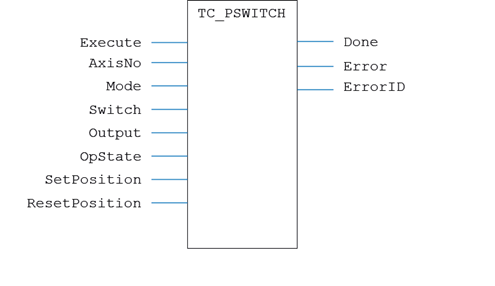
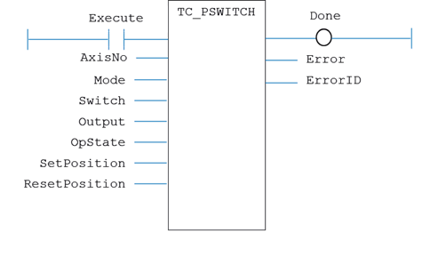

Motion Function
Issues a new PSWITCH request for the axis specified by 'AxisNo'.
|
Execute : BOOL; |
Rising edge requests execution |
|
AxisNo : USINT; |
Axis number |
|
Mode : USINT; |
PSwitch mode |
|
Switch : USINT; |
PSwitch number: 0..63. |
|
Output : USINT; |
Digital output number |
|
OpState : BOOL; |
Output state required when PSwitch is in range |
|
SetPosition : LREAL; |
Start position where output will assume the defined state |
|
ResetPosition : LREAL; |
End position where output will go to the opposite state |
|
Done : BOOL; |
TRUE when function has completed normally |
|
Error : BOOL; |
TRUE if a program error is detected |
|
ErrorID : UINT; |
Returned error number |
When the execute input changes from FALSE to TRUE (rising edge), the function block runs the command.
A programming error, such as parameter out of range, will set the Error output and return an error ID number. For the Error ID reference, see the Trio Programming error list.
Inst_TC_PSWITCH( Execute (*BOOL*) , AxisNo (*USINT*) , Mode (*USINT*) , Switch (*USINT*) , Output (*UINT*) , OpState (*BOOL*) , SetPosition (*LREAL*) , ResetPosition (*LREAL*) );

